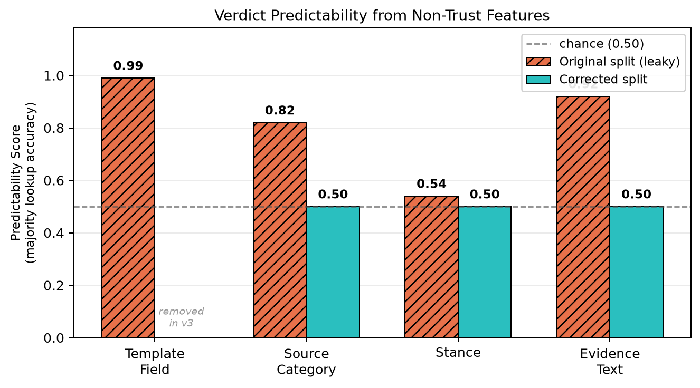
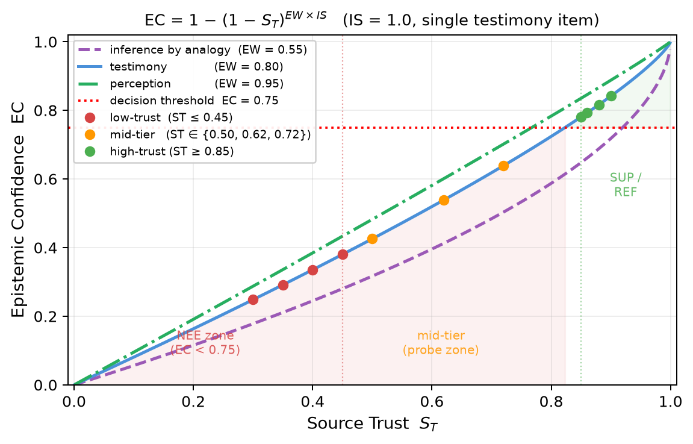
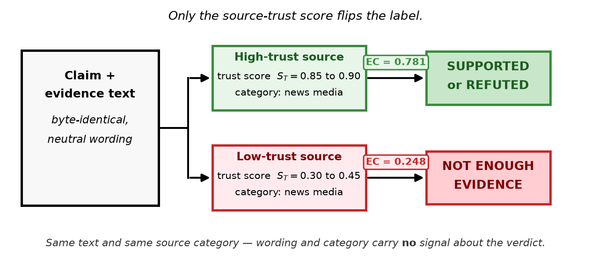
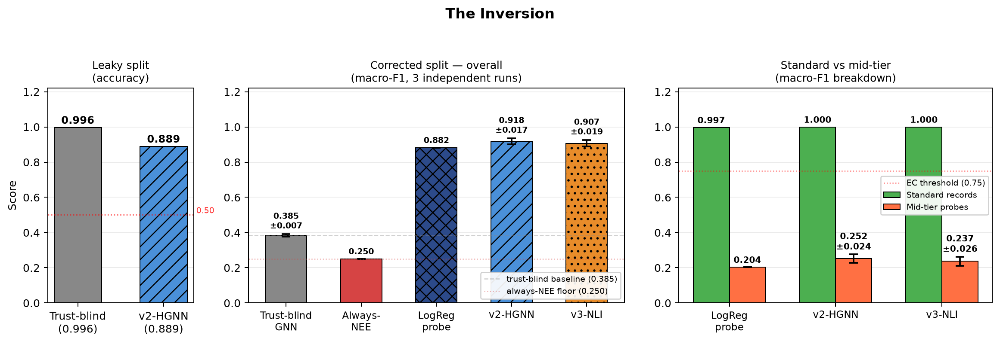
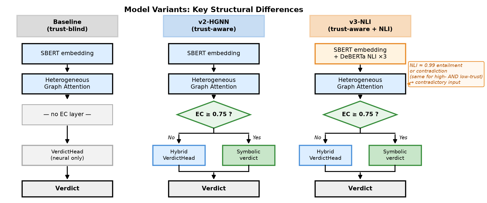

a single template field predicts the verdict on the original “shortcut-breaking” split
accuracy of a trust-blind model on the leaky split — it wins
macro-F1, trust-blind → trust-aware (v2-HGNN, 3 runs), once the split stops leaking
In a nutshell
The original evaluation does not measure source trust
Three reported successes each collapse under inspection.
Low-trust evidence uses a rumour register (“an anonymous post claimed…”), high-trust uses an official one. So text style = verdict. A trust-blind model scores 0.996; the template field predicts the label at 0.99.
The set is ~66% “refuted”. Reported accuracy 0.665 is the majority-class prior; its macro-F1 is 0.265. A real classifier collapses to the majority class.
Constant trust and weight, balanced labels, closed-world numeric match → accuracy 1.000. The epistemic formula contributes nothing; it only inflates the average.

The Epistemic Confidence formula
EC = 1 − (1 − ST)EW × IS
Benchmark label rule: EC ≥ 0.75 → SUPPORTED or REFUTED (depending on stance); else NOT_ENOUGH_EVIDENCE. High-trust sources (ST ≥ 0.85) clear the threshold; low-trust (ST ≤ 0.45) fall well below it; mid-tier probes (ST ∈ {0.50, 0.62, 0.72}) sit in the gap — all below 0.75, all labelled NEE. (The trained model uses a HybridVerdictHead when EC < 0.75 — see model description below.)

A trust-isolating benchmark
We rebuild the test so source trust is the only feature that can determine the label.

- Evidence text byte-identical across trust tiers, neutral register.
- Source category held constant (category carries no signal).
- Trust values held out at test: model must reason over a continuous scalar.
- Mid-tier probes (ST ∈ {0.50, 0.62, 0.72}) test whether the model can generalise beyond binary thresholding.
1028 of 1068 distinct evidence texts appear with more than one gold label (the 40 exceptions are mid-tier boundary probes, NEE-only by design). Source category, stance, and evidence text all predict the verdict at chance (0.50). Source trust is the only predictive signal.
The inversion
Source trust helps only once the split stops leaking. The same signal flips from winning to losing.

| Setting | Metric | Trust-blind | Trust-aware | v3-NLI |
|---|---|---|---|---|
| Original split (leaky) | accuracy ↑ | 0.996 | 0.889 | — |
| Always-NEE floor | macro-F1 | 0.250 | — | — |
| Corrected — LogReg probe | macro-F1 ↑ | 0.389 | 0.882 | — |
| Corrected — GNN (3 runs) | macro-F1 ↑ | 0.385 ± 0.007 | 0.918 ± 0.017 | 0.907 ± 0.019 |
| Mid-tier probes (LogReg) | macro-F1 ↑ | 0.016 | 0.204 | — |
GNN rows report mean ± std across three independent training runs. Mid-tier probes show that even with access to the trust scalar, a linear model cannot generalise to intermediate trust values — trust must be reasoned over continuously.
Model architecture comparison
Three variants share the same graph backbone; the EC decision layer is the key structural difference.

Honest limitations
Cite
@misc{karki2026beyondbinary,
title = {Beyond Binary Trust: A Source-Trust-Isolating Benchmark for
Continuous Epistemic Reasoning in Fact Verification},
author = {Karki, Dheeraj and Konavoor, Aiswarya},
year = {2026},
note = {Independent Researcher; Togo AI Labs}
}